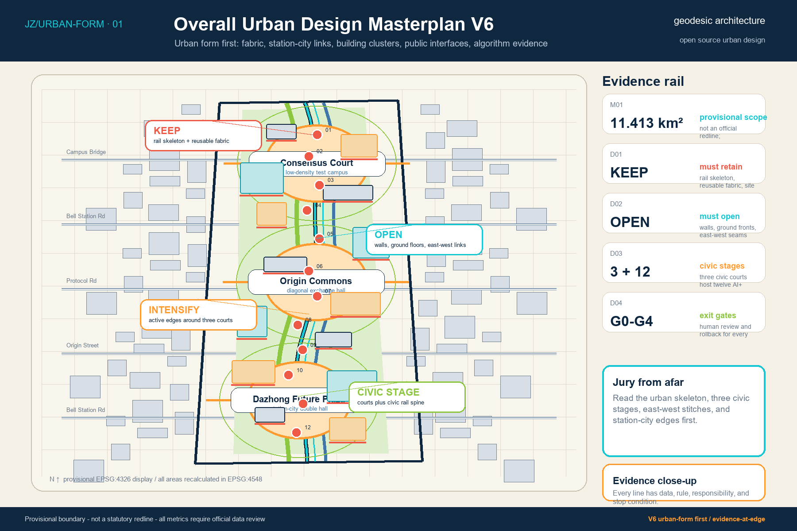
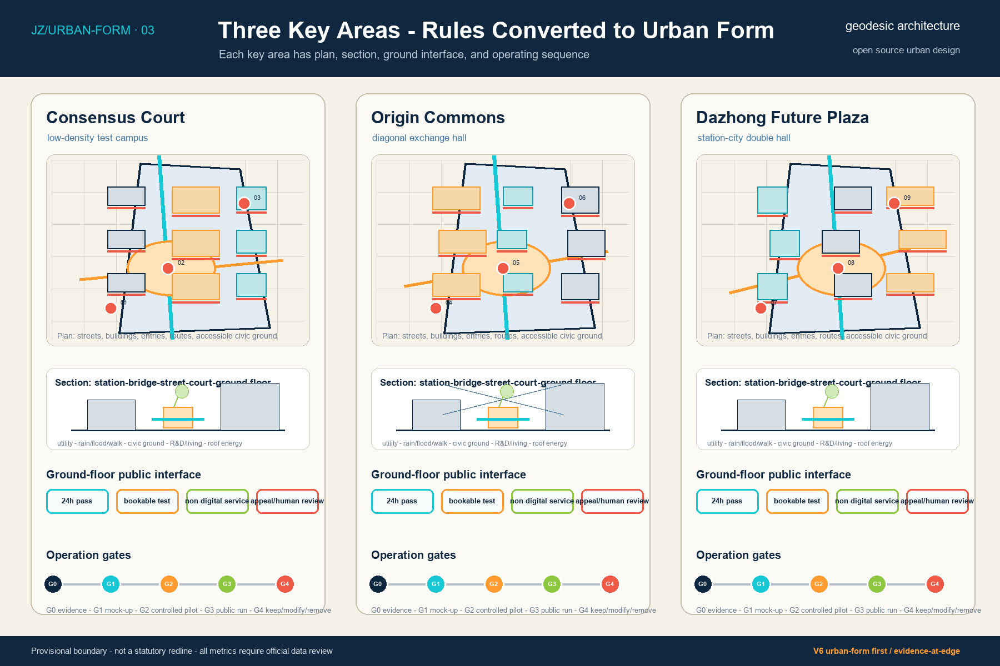
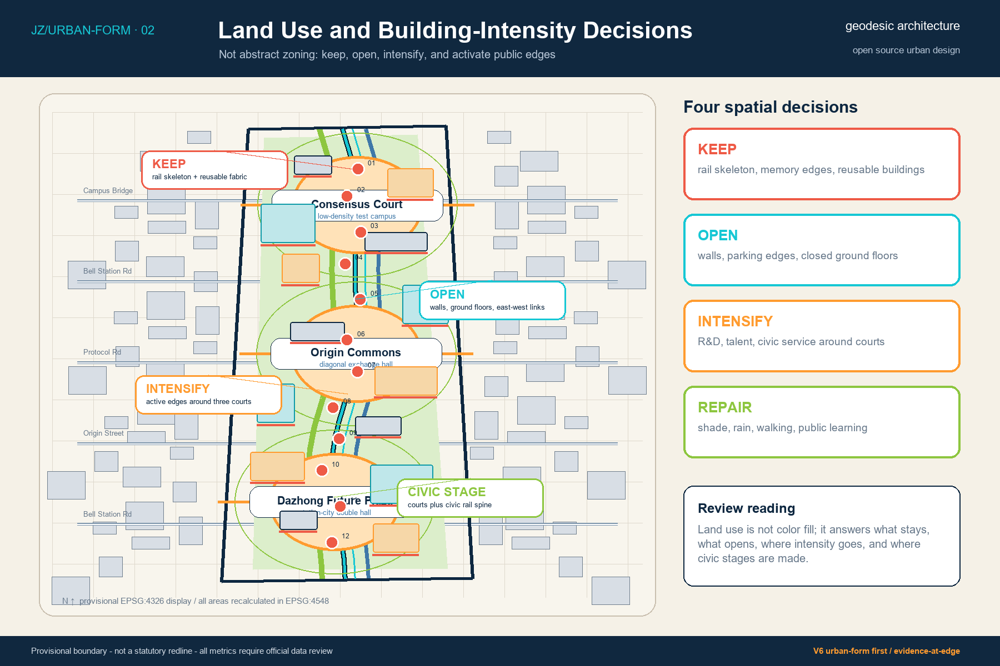
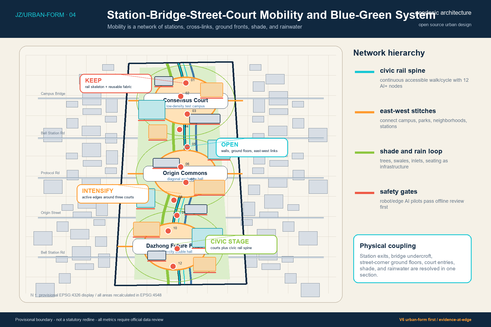
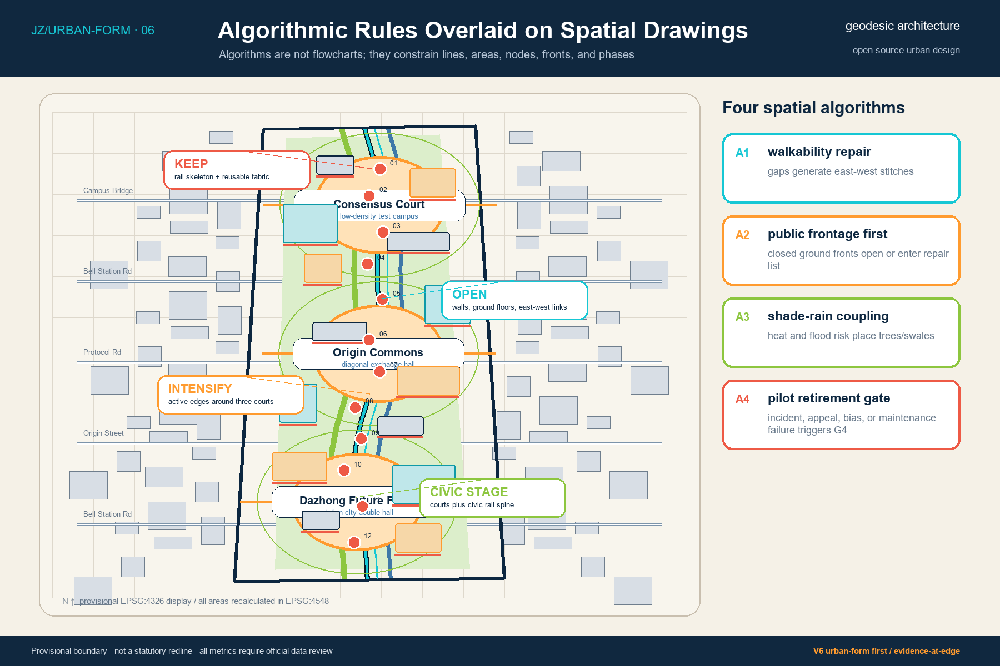
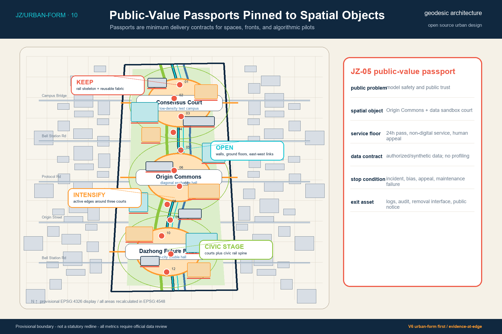

01 Urban Design Masterplan
Urban fabric, station-city relations, building clusters, public edges and algorithmic evidence are composed on one master drawing.
V6 moves from concept-evidence diagrams to dominant urban design drawings. The first A0 sheet now foregrounds the masterplan, urban fabric, station-city relations, building clusters and public-space armature, with evidence kept at the drawing edge.

Urban fabric, station-city relations, building clusters, public edges and algorithmic evidence are composed on one master drawing.

Each area contains a plan, section, ground-floor public interface and operational sequence.

Keep, open, intensify and ecological stitching decisions are attached to blocks and edges.

The Centennial Smart Track spine, sponge tree corridors and civic courts become operable public scenes.

Algorithmic rules change lines, surfaces, nodes, ground floors and phasing, instead of staying in separate process diagrams.

Sources, assumptions, metrics, exit gates and maintenance responsibilities remain at the drawing edge as evidence.
Self-check status: V6 preserves the provisional-boundary warning and keeps sources, assumptions, metrics and task coverage in structured files. The visual page is an exhibition and verification entry point.